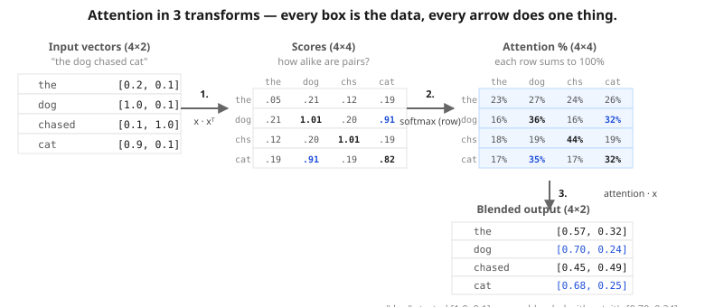

Lesson 3 — Attention
The big idea of the Transformer. Once you understand this, every modern AI model — GPT, BERT, PRAGMA — uses some variation of it.
Steps in this lesson (matches the notebook)
- The intuition
- 🗺 The whole thing on one page
- A 2-word worked example
- Step 1 — Scores (dot products)
- Step 2 — Softmax (100% attention budget)
- Step 3 — Mix (weighted blend)
- 🎮 Interactive: build an attention matrix
- 🔬 One word, step by step
- The full formula (Q, K, V)
- Multi-head attention
- Why this is such a big deal

Idea The intuition
When you read "the cat chased the mouse and then IT ran away", what does "it" refer to? Your brain looks at every word in the sentence, decides which ones matter, and figures out that "it" most likely refers to "mouse".
Attention lets the model do the same thing: every word looks at every other word and decides which ones are important for understanding itself.
Map The whole thing on one page
Attention is three transforms in a row. Every step rearranges the same data; the shapes tell the story. Look at this once before we work through the example — then everything below is just zooming in on each arrow.

Example A 2-word worked example
Let's strip it to 2 words and 2-dim embeddings so we can do every step on paper. Sentence: "the cat". Embeddings (made up):
the → [1, 0]
cat → [2, 3]Step 1 — Score every pair (dot products)
the · the = (1×1) + (0×0) = 1
the · cat = (1×2) + (0×3) = 2
cat · the = (2×1) + (3×0) = 2
cat · cat = (2×2) + (3×3) = 13| the | cat | |
|---|---|---|
| the | 1 | 2 |
| cat | 2 | 13 |
cat · cat = 13 is huge — cat is very related to itself.
Step 2 — Softmax (turn raw scores into a 100% budget)
Each word has 100% attention to spend. Softmax converts raw scores into percentages summing to 1. The biggest score wins most of the budget.
| the | cat | |
|---|---|---|
| the | 0.27 | 0.73 |
| cat | 0.00 | 1.00 |
Step 3 — Mix (weighted blend of word vectors)
new "the" = 0.27 × [1, 0] + 0.73 × [2, 3] = [1.73, 2.19] ← absorbed cat-flavor
new "cat" = 0.00 × [1, 0] + 1.00 × [2, 3] = [2, 3] ← stayed itself[1, 0] (bland — could mean anything). After attention, it's much closer to cat's vector. It now means "the cat", not just "the".
# 3 words, 2 features each: [animal-ness, action-ness] x = [ [0.2, 0.1], # the [1.0, 0.1], # dog [0.1, 1.0], # chased ] scores = x @ x.T # every pair's dot product attention = softmax(scores, dim=-1) # each row sums to 1.0 new_x = attention @ x # weighted blend print("scores =", scores) print("attention =", attention) print("new_x =", new_x)
- Defaults: "the" bland, "dog" animal-ish, "chased" action-ish. In dog's attention row, who does it attend to most besides itself?
Show answer & explanation
dog attends to "the" slightly more than to "chased". Scores:
dog·the = 1.0·0.2 + 0.1·0.1 = 0.21;dog·chased = 1.0·0.1 + 0.1·1.0 = 0.20. The "animal" dimension of dog (1.0) lines up a tiny bit with "the"'s animal value (0.2), more than with "chased"'s tiny animal value (0.1). Attention is similarity-driven — words look at words they're directionally aligned with. - Make the very animal-ish (animal slider → 2.0). What changes for dog's attention row?
Show answer & explanation
dog now attends mostly to "the".
dog·the = 1.0·2.0 + 0.1·0.1 ≈ 2.01— biggest score in the row, even bigger than self-attention (dog·dog = 1.01). Softmax concentrates the attention budget on "the". Making two words point the same direction makes them strongly attend to each other. This is how attention learns to bind related words (like a pronoun to its antecedent). - Make all 3 words identical (e.g., set every slider to 1.0). What does the attention matrix look like?
Show answer & explanation
Every row is exactly
[0.33, 0.33, 0.33]. All pairwise dot products are equal (same vectors), so softmax over a row of equal scores gives a uniform distribution. Attention has nothing to work with — the model can't say "this word is more relevant than that one" because every word looks the same. That's why the embeddings have to be trained first (Lesson 2) before attention can do anything useful. - Bonus: set chased to
[0.0, 2.0](very action-ish). What happens in chased's row?Show answer & explanation
chased attends almost entirely to itself (≈ 1.00). chased·chased =
0² + 2² = 4. chased·other words ≈ 0.0–0.2. With such a big gap, softmax concentrates virtually all the budget on the winner. The bigger the gap between the top score and the rest, the SHARPER softmax becomes — almost a one-hot pick. Small gap → spread; big gap → focus.
Play 🎮 Interactive: build an attention matrix word by word
Pick a few words below. Each gets a random 2-dim "embedding" (you can rerandomise). We'll compute the full attention matrix and show how each word ends up "mixing" with the others.
Trace 🔬 One word, step by step
Let's follow a single word through all three steps with meaningful vectors (the same ones the notebook uses). Each word is described by two readable features — how animal-ish and how action-ish it is. Pick a word and watch its vector turn into scores, then percentages, then a new blended vector.
Q/K/V The full formula
Real attention uses three learned projections of each word vector — Query, Key, Value — instead of just dotting x with itself:
Attention(Q, K, V) = softmax(Q · Kᵀ / √d) · V- Q (query) — "what am I looking for?"
- K (key) — "what do I offer to others looking?"
- V (value) — "what do I actually contribute if matched?"
The three matrices are trainable knobs nudged by the same training loop from Lesson 1. Q/K/V give the model more flexibility — each word can ask different questions of others than what it offers in return.
Go deeper: what's the √d for?
Before softmax we divide the scores by √d (the square root of the vector size). Here's why: as vectors get longer (more features), their dot products grow bigger and bigger. Feed huge numbers into softmax and it becomes too spiky — one word grabs ~100% of the attention and everyone else gets ~0%, so the model stops blending information.
See it on plain numbers: softmax([2, 1, 0]) ≈ [0.66, 0.24, 0.09] (nicely shared) but softmax([20, 10, 0]) ≈ [1.00, 0.00, 0.00] (one word hogs everything). Dividing by √d keeps the scores in the gentle range. It's a small stabiliser, not a deep idea — but it matters in practice.
Go deeper: what if every word has the IDENTICAL vector?
A useful thought experiment. If every word in the sentence had the exact same embedding, what would attention do? I set all four word vectors to [0.5, 0.3] and computed the attention matrix:
the dog chs cat
the 0.25 0.25 0.25 0.25
dog 0.25 0.25 0.25 0.25
chased 0.25 0.25 0.25 0.25
cat 0.25 0.25 0.25 0.25Perfectly uniform — every word splits 25% across the 4 tokens. Attention can't tell anyone apart, so it spreads evenly. The whole power of attention depends on words having different vectors in the first place. This is also why embeddings have to be trained first — random embeddings give almost-uniform attention; trained embeddings give sharp, meaningful attention.
Multi Multi-head attention
Instead of running the attention formula once, you run it several times in parallel with different Q/K/V matrices, then concatenate the outputs. Each "head" can specialise — one might learn grammar, another might learn subject-object pairing, another might learn nearby words. PRAGMA-L uses 16 attention heads in its history encoder.
Heads-up on the word "head." An attention head is one of these parallel question-askers — that's the real industry term, straight from the 2017 paper Attention Is All You Need. Later (in Lesson 4) you'll meet the output head: the final layer that turns vectors into word scores. Same word, completely different job — don't let them blur together.
Why Why this is such a big deal
Before attention (~2017), models read text left to right. A word at position 100 could only "remember" position 1 through a fuzzy compressed memory. Long-range dependencies were really hard.
Attention solved this: every word can look at every other word in parallel, directly. No fuzzy memory. No left-to-right bottleneck. Long-range information is as accessible as short-range.
- Score every pair with a dot product.
- Softmax turns scores into a 100% attention budget.
- Mix word vectors using those weights. Each word now carries context.
- Attention = score every word pair → softmax the scores → mix the values. That's the whole trick.
- Query/Key/Value let each word ask "who matters to me?" and pull in their information.